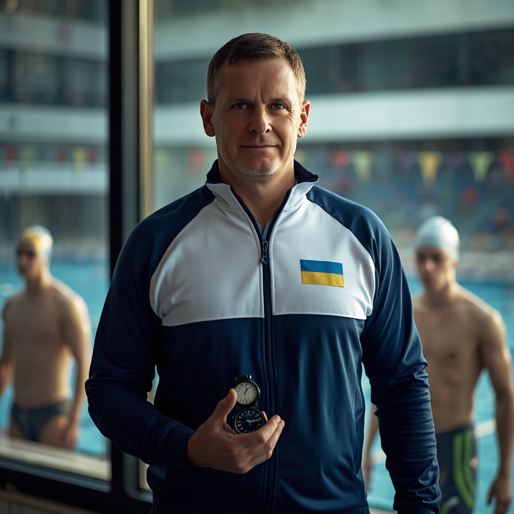
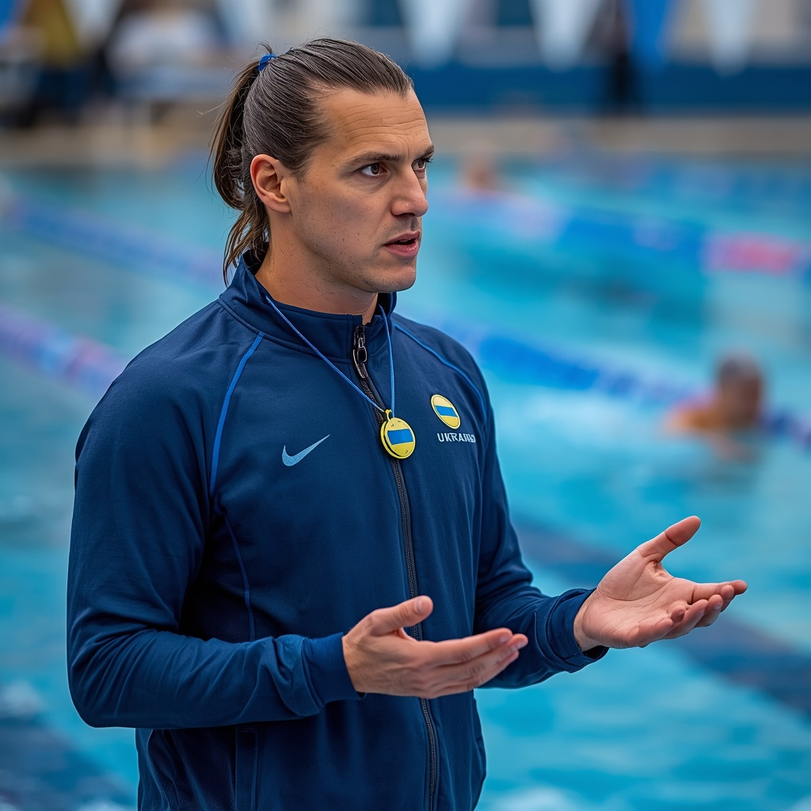
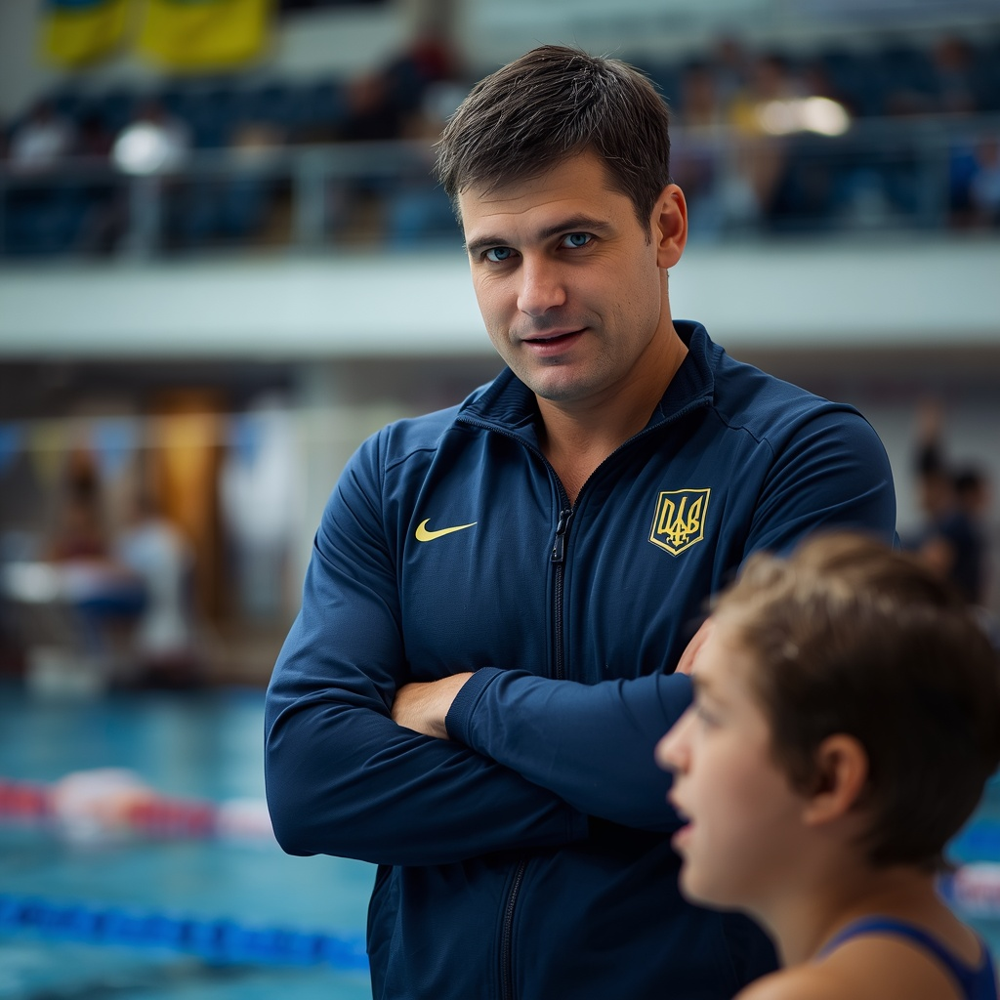
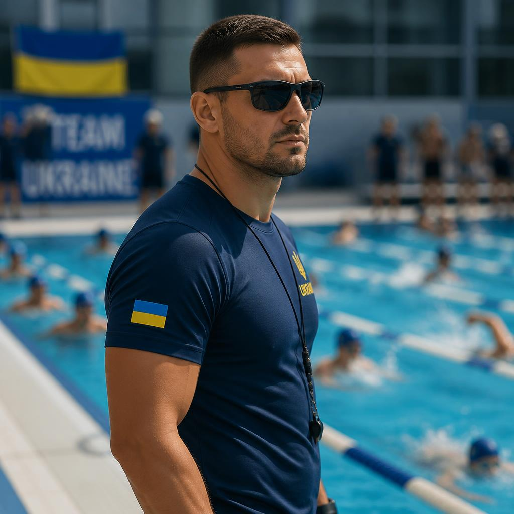
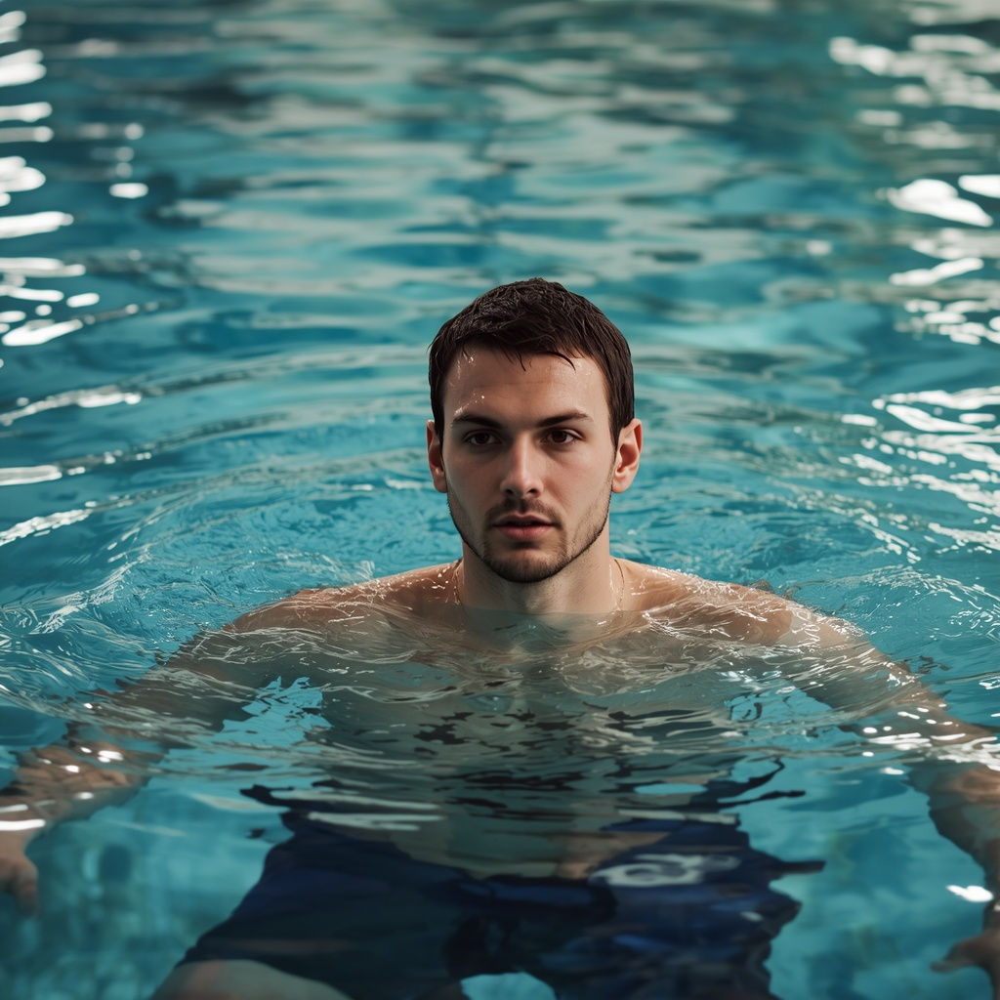
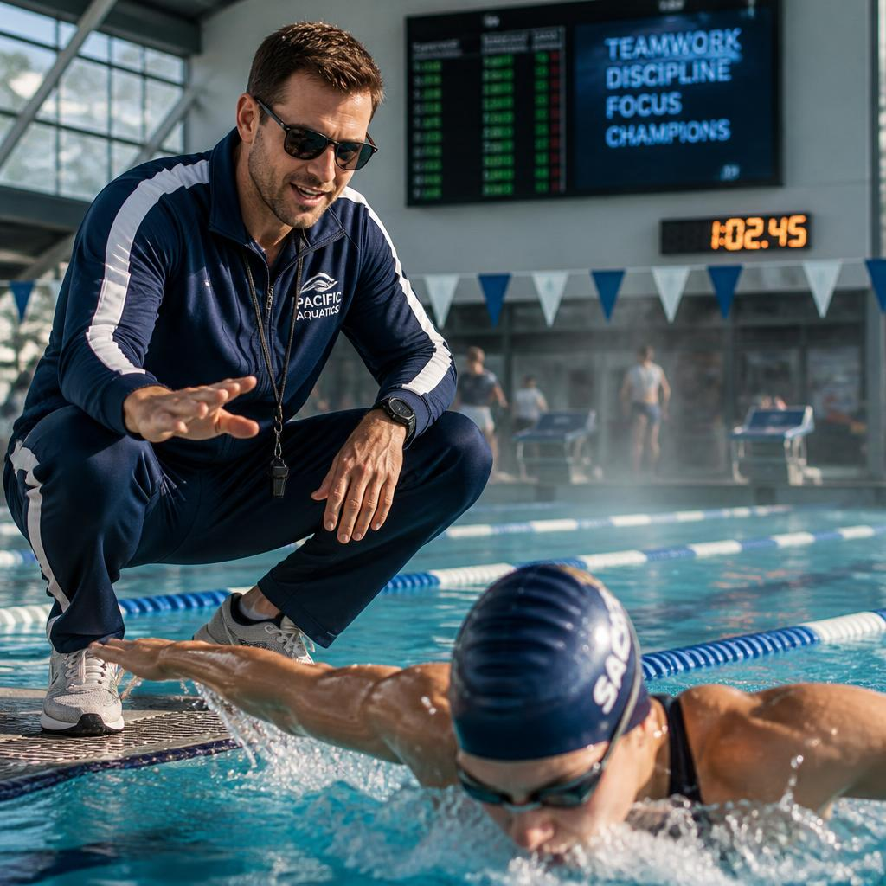
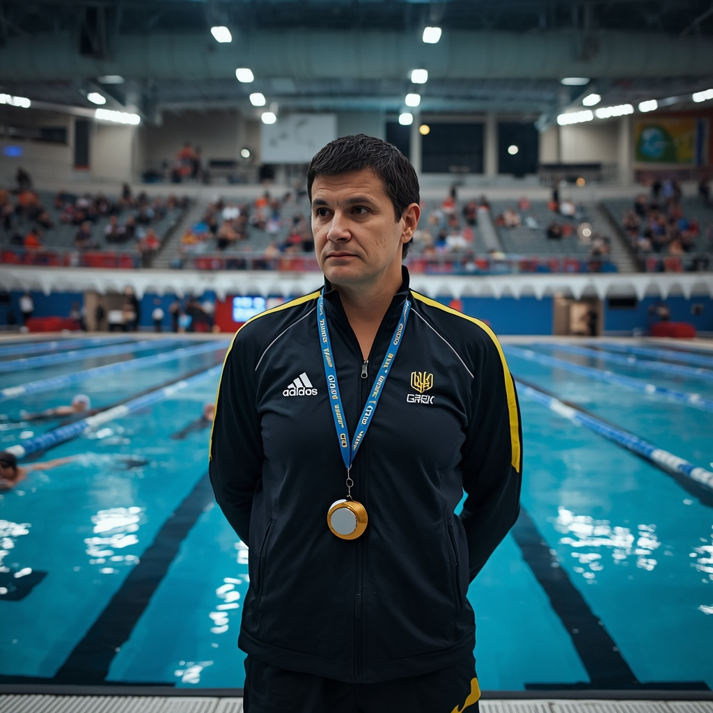
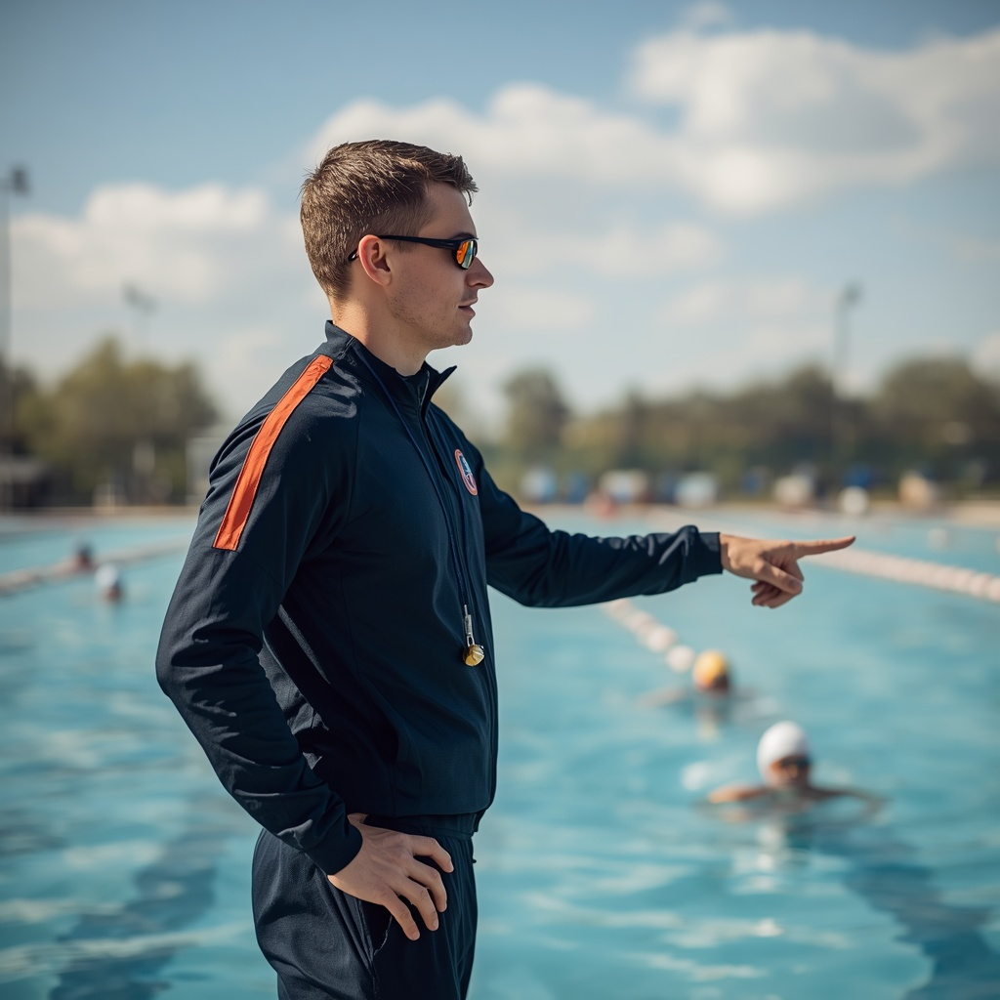

Плавання — це унікальний вид спорту, який гармонійно розвиває всі групи м'язів, покращує роботу серцево-судинної системи та зміцнює імунітет. Це один із найбезпечніших видів фізичної активності, що підходить людям будь-якого віку. Заняття плаванням не лише вчать впевнено почуватися у воді, але й допомагають зняти стрес, виправити поставу та підвищити загальну витривалість організму. Тренування можуть проходити у різних стилях: вільний стиль (кроль), брас, батерфляй та плавання на спині.


Правила Плавання зосереджені на техніці виконання кожного стилю та дотриманні дисципліни у воді. Під час змагань важливо не порушувати технічні вимоги (наприклад, правильний рух рук та ніг у брасі). Старт здійснюється або з тумби, або з води, залежно від виду запливу. Гравці повинні дотримуватися своєї доріжки, не заважати іншим учасникам та обов'язково торкнутися стінки басейну рукою або частиною тіла при закінченні дистанції. Важливо також дотримуватися правил безпеки: не пірнати в невідомих місцях та слухати інструкції тренера.
Професіонали, які допоможуть вам досягти ідеального результату

Артур Павленко — Плавання. Досвід: 12 років. Спеціалізація: вільний стиль, швидкісний розворот, дихання. Досягнення: майстер спорту міжнародного класу, підготував призерів європейських ігор. Про себе: «Вчу ковзати по воді з мінімальним опором та витискати максимум на фініші».

Владислав Шевченко — Плавання. Досвід: 9 років. Спеціалізація: батерфляй, дельфінячий удар, силова витривалість. Досягнення: багаторазовий чемпіон України, ліцензія AQUA. Про себе: «Поставлю потужний гребок і навчу ідеальної координації в найважчому стилі плавання».

Дмитро Кравчук — Плавання. Досвід: 15 років. Спеціалізація: плавання на спині, старт, тактика довгих дистанцій. Досягнення: заслужений тренер України, виховав 4 майстрів спорту. Про себе: «Навчу тримати баланс тіла, контролювати темп та безпомилково проходити повороти».

Роман Ковальчук — Плавання. Досвід: 7 років. Спеціалізація: техніка брасу, синхронність поштовху, гнучкість суглобів. Досягнення: диплом академії спорту, розробник авторської методики ковзання. Про себе: «Вчу технічного брасу, де кожен рух дає максимальне просування вперед».

Олег Марченко — Плавання. Досвід: 4 роки. Спеціалізація: подолання страху, базова техніка, дитячі групи. Досягнення: призер студентської ліги, засновник дитячого клубу «Посейдон». Про себе: «Зроблю так, щоб вода стала вашою улюбленою стихією, вчу впевнено триматися з нуля».

Денис Лисенко — Плавання. Досвід: 10 років. Спеціалізація: комплексне плавання, кардіо-підготовка, аква-аеробіка. Досягнення: вивів команду ВНЗ у топ-3 чемпіонату, сертифікований реабілітолог. Про себе: «Покращую витривалість, коригую поставу та розганяю швидкість у воді».

Ярослав Поліщук — Плавання. Досвід: 8 років. Спеціалізація: спринтерські дистанції, сила гребка, вибуховий старт з тумби. Досягнення: фіналіст Кубка України, кращий тренер з підготовки спринтерів. Про себе: «Навчу зриватися зі старту та проходити 50-метрівку на одному диханні».

Артем Мельник — Плавання. Досвід: 6 років. Спеціалізація: витривалість, довгі дистанції, вдосконалення техніки кролю. Досягнення: призер національних змагань, підготував команду до запливу на відкритій воді. Про себе: «Допоможу позбутися зайвих рухів, правильно розподілити сили на дистанції та покращити особистий рекорд».